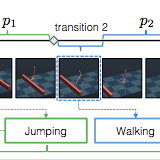
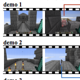
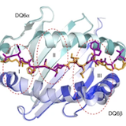
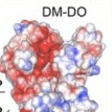

|
Research
I'm interested in investigating how learning algorithms can enable machines to acquire complex skills in real-world settings. My research experiences thus far delve into learning and interpreting deep representations for complex skills and enabling machines to smoothly compose and execute skills for hierarchical tasks.
|
|

|
Composing Complex Skills by Learning Transition Policies with Proximity Reward Induction
Youngwoon Lee*,
Shao-Hua Sun*,
Sriram Somasundaram,
Edward Hu,
Joseph J. Lim,
International Conference on Learning Representations (ICLR), 2019
project page
Transition policies enable agents to execute learned skills smoothly to perform complex tasks.
|
|

|
Neural program synthesis from diverse demonstration video
Shao-Hua Sun*,
Hyeonwoo Noh*,
Sriram Somasundaram,
Joseph J. Lim,
International Conference on Machine Learning (ICML), 2018
project page
We propose a neural program synthesizer that explicitly synthesizes underlying programs from behaviorally diverse and visually complex demonstration videos.
|
|

|
In vivo clonal expansion and phenotypes of hypocretin-specific CD4+ T cells in narcolepsy patients and controls
Wei Jiang,
James R. Birtley,
Shu-Chen Hung,
Weiqi Wang,
Shin-Heng Chiou,
Claudia Macaubas,
Birgitte Kornum,
Lu Tian,
Huang Huang,
Lital Adler,
Grant Weaver,
Liying Lu,
Alexandra Ilstad-Minnihan,
Sriram Somasundaram,
Sashi Ayyangar,
Mark M. Davis,
Lawrence J. Stern,
Elizabeth D. Mellins,
Nature Communications, 2019
We investigate the autoimmune contribution to narcolepsy development and analyze the in vivo expansion of HCRT-reactive TRAJ24+ cells.
|
|

|
pH-susceptibility of HLA-DO tunes DO/DM ratios to regulate HLA-DM catalytic activity
Wei Jiang,
Michael J. Strohman,
Sriram Somasundaram,
Sashi Ayyangar,
Tieying Hou,
Nan Wang,
Elizabeth D. Mellins,
Scientific Reports vol. 5, p. 17333, Nov. 2015
We investigated the pH-dependence of DM-DO-mediated class II peptide exchange and identified an MHC-II allele-independent relationship between pH, DO/DM ratio, and efficient peptide exchange.
|
|